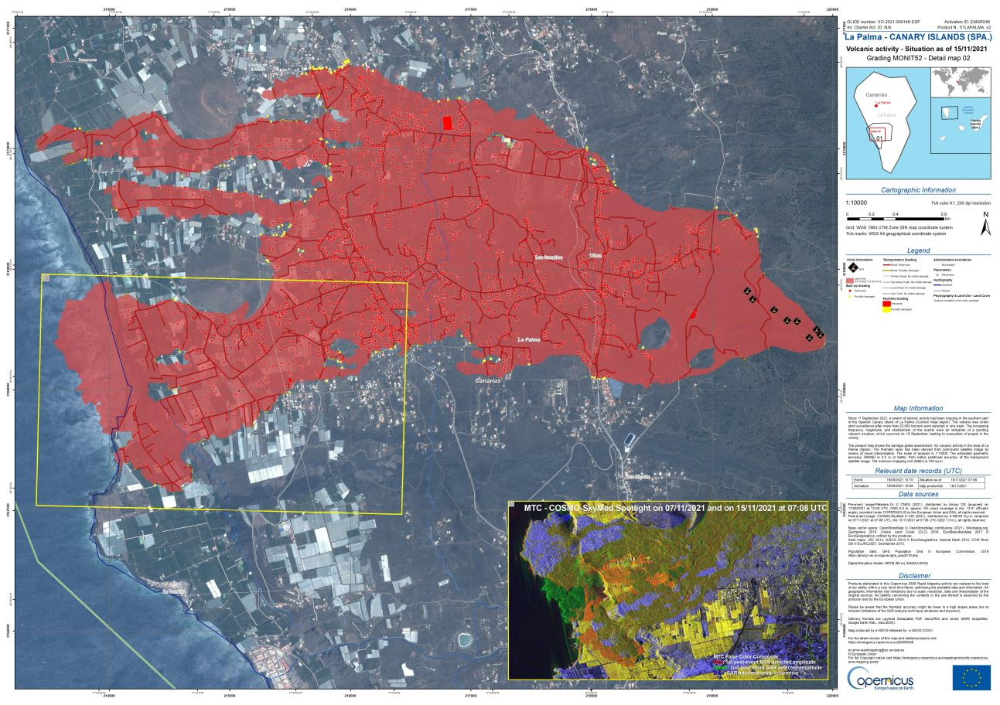
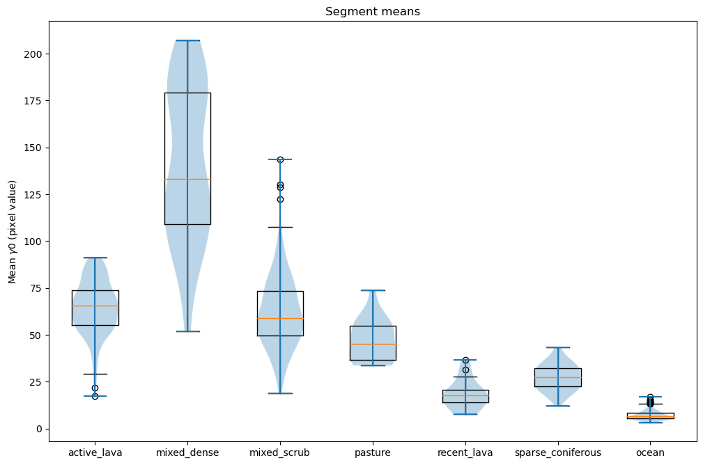
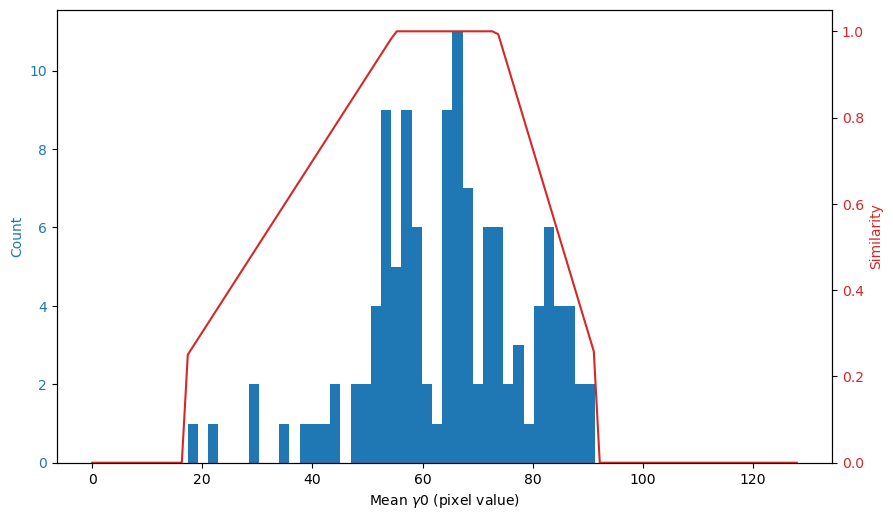
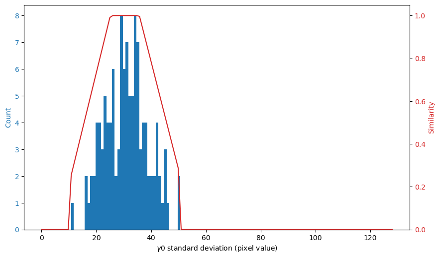

Semi-Automatic Mapping of the 2021 La Palma Tajogaite Eruption using Sentinel-1 Data
Abstract
On Sunday 19th September 2021, the Canarian island of La Palma experienced a stratovolcanic eruption on the Cumbre Veija ridge, which lasted approximately 3 months. An approach based on the principles of geographical object-based image analysis (GEOBIA) is presented here for the semi-automatic mapping/classification of active lava flows from Sentinel-1 backscatter data. The approach is based on SLIC01 ‘superpixel’ segmentation, simple statistical features and a neighbourhood-based region growing algorithm.
Results are mixed, and more successful for some days’ images than others. Transferability is still to be investigated.
Python scripts with the full implementation are available in the GitHub repository github.com/lukesdm/la-palma-lava-mapping-nb (license: To be decided).
Introduction
On Sunday 19th September 2021, the Canarian island of La Palma experienced a stratovolcanic eruption (later named Tajogaite2) on the Cumbre Veija ridge. The eruption lasted until Tuesday 13th December - almost 3 months. Due to early detection and action of the local authorities, there was no direct loss of human life. However, there was significant damage to infrastructure, buildings and land [Carracedo et al. 2022].
Eruptions are often accompanied by large amounts of smoke and particulates, which can reduce the effectiveness of optical imaging satellites for monitoring. The Copernicus Sentinel-13 synthetic aperture radar (SAR) mission, whose data is freely available, has the ability to penetrate clouds, darkness and smoke plumes, and so can be an effective tool in these situations. This data can be difficult to interpret, however [Shahzad et al. 2019].
An approach based on the tools and principles of GEOBIA4 is presented here for the semi-automatic mapping/classification of active lava flows - initially for the La Palma Cumbre Vieja event, with transferability still to be investigated. An overview of the approach is shown in Figure 1. Preliminary work using a change-detection approach was investigated, and is discussed briefly in Section 6.
Python scripts with the full implementation are available in the GitHub repository github.com/lukesdm/la-palma-lava-mapping-nb (license: To be decided).
Method
Data sources
The dataset is a series of Sentinel-1 ground-range-detected (GRD) images captured on the dates before, during and after the eruption, with the characteristics given in Table 1. The series of images is shown in Figure 2.
For reference, a series of maps produced by the Copernicus Emergency Rapid Mapping group are referred to. These were created with the aid of high-resolution sources of various types, such as COSMO-Skymed5, a high resolution X-band SAR mission [Copernicus Emergency Management Service 2021]. One such map is shown in Figure 3. Although there are caveats about accuracy from the Rapid Mapping team, no corrections were issued about this product as they otherwise would, if significant issues had been identified.
| Option | Chosen value | Rationale |
|---|---|---|
| Acquisition mode | Interferometric wide swath (IW) | Availability in geographic location. |
| Signal type | Backscatter intensity (linear) - |
Seemed to give clearest differentiation for visual inspection. |
| Polarisation | VV | Seemed to give clearest differentiation for visual inspection. |
| Orbit | Ascending | Captures were the closest dates matching the event timeline. |
| DEM correction | 30m Mapzen | Highest-resolution available choice without additional pre-processing. |
| Ground-sampling distance | 10m | This was the highest available. |

Segmentation
Radar speckle6, geometric distortions, and other properties make analysis at the single-pixel level error-prone. There are various filtering methods available that attempt to counter this. However, there is often a risk of losing spatial or textural information this way [Painam and Manikandan 2021].
Inspecting the image series, it can be seen that active lava flow can be difficult or impossible to differentiate from its surroundings. It needs to be examined with more context. Superpixel segmentation allows for this - it can be thought of as a sort of ‘smart chessboard’ segmentation, as it divides the image into similar sized segments, which roughly follow object borders [Achanta et al. 2012]. The implementation chosen was the SLIC0 algorithm of the scikit-image Python package7. Despite being labelled a ‘zero parameter’ algorithm, there are still some high-level parameters to choose - the number of segments, and the compactness. For the area of interest (AoI), a segment count of 50008 produces superpixels of approximately 15-20 pixels across (150 to 200m), therefore encompassing groups of around 300 pixels (3ha). This balances spatial resolution with statistical usefulness at the scales of the image objects of interest (reference maps show active lava flow covering approximately 1000ha as of 2021-11-15). The compactness parameter determines the trade-off between regularity and boundary-recall [Schick et al. 2012]. As no speckle-filtering was applied, object boundaries were often unclear, so a low compactness of 0.1 was chosen, and regularity was prioritized. This regularity was convenient for subsequent neighbourhood calculations. Figure 4 shows the results of such a segmentation.
Feature engineering
Segment Statistics
The backscatter mean and standard deviation within each segment were selected as building blocks for the classification approach. These are both heavily influenced by the surface type at the scales of interest. This was determined by taking samples of various land-cover/land-use (LCLU) types, and comparing their distributions. The LCLU type was determined from recent high-resolution ortho-imagery and maps produced by GrafCan9. The sample locations are shown in Figure 5, distributions of their statistical features in Figure 6, and an explanation of the sample labels in Table 2. As can be seen, there is significant overlap between some LCLU types, especially vegetated areas. Interestingly, excluding outliers, the lava field of the 1971 eruption did not show a large amount of overlap with the means or standard deviations of the segments of the 2021 eruption. The mean backscatter of the 1971 field is lower, which could be an indicator that it has a smoother surface; it could also be due to topographical effects of its surroundings - further investigation is needed.
| Label | Definition |
|---|---|
| active_lava | Region of active lava flow, as of 2021-11-15. |
| mixed_dense | Mix of dense built-up and agricultural land, often including covered plantations. |
| mixed_scrub | Mix of sparsely built-up land mostly surrounded by scrub. |
| pasture | Mostly pasture (amongst sparsely built land/others). |
| recent_lava | Lava field of the previous eruption of 197110. |
| sparse_coniferous | Coniferous forest, which is typically sparse in the Canaries. |
| ocean | Ocean (Atlantic). |


Local lava-likeness
A local lava-likeness metric was derived from the similarities of a segment’s mean and standard deviation to those of a user-defined reference sample.
Reference sample
Given that the area of lava flow grows during an eruption, a viable reference sample covering active lava that is valid early in the eruption will be also be valid later in the eruption. But, as atmospheric and ground conditions affect the received backscatter readings and lead to variations across a time series (see, e.g., [Doblas et al. 2020]), the statistical features of the underlying image objects have to be recalculated for any given day.
Similarity functions
Similarity functions composed of piecewise linear segments around the sample’s range and quartiles were used, such as those in Figure 7. Their implementation resembles the Python code in Listing 1. The statistical similarities are then combined to a single metric by taking their mean, as in Listing 2.
Listing 1: Mean similarity calculation (Python)
import numpy
def calc_mean_similarity(segment_data, reference_sample):
low = reference_sample["mean"].quantile(0.0)
q1 = reference_sample["mean"].quantile(0.25)
q3 = reference_sample["mean"].quantile(0.75)
high = reference_sample["mean"].quantile(1.0)
return numpy.interp(
x = segment_data["mean"],
xp = [low, q1, q3, high],
fp = [0.25, 1.0, 1.0, 0.25],
left = 0,
right = 0 )Listing 2: Local lava-likeness calculation (Python)
def local_lava_likeness(mean_similarity, std_similarity):
return (mean_similarity + std_similarity) / 2

Figure 8 shows the result of this for 2021-11-15 with reference sample of approximately 50 segments. Some observations:
- The area directly around the vents show low lava-likeness. This is elaborated on in Section 5.
- There is clustering where expected - within the active flow - but also pockets in several parts of the map outside the flow, especially to the north east. This shows this metric alone is not suitable for determining the active flow.
Neighbourhood-based lava-likeness
Based on the premise that lava is more likely to be present alongside other lava, i.e., there is strong positive spatial autocorrelation, segments’ neighbourhoods were incorporated into the classification. Based on the semi-regularity of the superpixels, the neighbourhood was defined as simply the adjacent superpixels, i.e., those with a shared border. A neighbourhood lava-likeness metric was devised by adding the mean local lava-likeness of a segment’s neighbourhood. The implementation resembles the python code in Listing 3.
Listing 3: Neighbourhood lava-likeness calculation (Python)
def neighbourhood_lava_likeness(all_segments, segment):
neighbors = get_neighbours(all_segments, segment)
return (
0.5 * segment["local_lava_likeness"] +
0.5 * neighbors["local_lava_likeness"].sum() / len(neighbors) )Region growing
Expanding on the consideration of neighbourhood, a region-growing algorithm was devised: If a segment’s neighbourhood lava-likeness exceeds a pre-defined threshold, it gets added to a group, and its neighbouring segments are explored, and this is repeated recursively. The user must supply a starting ‘seed’ segment which is known to be in the active lava flow. This can be outside the reference sample area, which is potentially useful in cases where there are small breaks in the flow, such as the platform which formed when lava entered the sea.
Threshold
A threshold of 0.5 was chosen, which means at least 2 factors (mean similarity, standard deviation similarity, or those of the neighbourhood) are required to be significant in order for a segment to be classified as lava.
Results
The effectiveness of the approach can be evaluated by comparing the produced estimated flow with the maps produced by EMS Rapid Mapping, with limitations: There are time differences between the Sentinel-1 scene capture and that of the source imagery the EMS maps are based on, during which lava flow could vary. This is especially significant in the early days of the eruption. As such, the reference has not been included for those days as it is unreliable, and a visual comparison with the base imagery is recommended. A full quantitative assessment would be considered for further work. A selection of results, given typical reference samples and seed points, are shown in Figure 9.
Discussion
It can be seen from the results that the approach has mixed effectiveness, and clear limitations. The approach works better for the later days of the eruption, when a larger reference sample can be selected. The grown region often extends to the north-east, which is vegetated and has a similar backscatter response. A potential mitigation for this would be to incorporate a digital elevation model (DEM) into the approach, limiting the potential lava extent to flat or down-slope areas.
There is consistently unclassified lava in the area around the vents: This is likely due to radar shadowing caused by the adjacent cone (see, e.g., [Canada Centre for Mapping and Earth Observation]). If this is the case, it is unlikely we will be able to achieve an improved result without incorporating additional information sources.
There are a number of other potential improvements to consider, for instance:
- Experiment further with algorithm parameter values.
- Investigate other textural statistical features of the superpixels, such as spatial autocorrelation (Moran’s I).
- Improve the effectiveness of the segmentation by pre-processing with, e.g., Sobel edge detection.
- Augment with available optical imagery.
As mentioned, transferability of the approach was not investigated. There are two aspects to explore in further work: temporal transferability, i.e., how effective is using a reference sample for one day on another day?, and spatial transferability, i.e., how effective is this approach for eruption events elsewhere?.
Appendix: Preliminary work — change detection
A convolutional change detection approach was investigated, but found to be ineffective. Whilst the lava platform which formed as lava entered the sea was made apparent, the land cover changes of interest were subtle and difficult to differentiate, due to the similarity of backscatter response of vegetated areas to the active lava flow. So, this approach was discarded. The most successful result is shown in Figure 10.
References
Footnotes
Simple linear iterative clustering, zero-parameter version↩︎
scikit-image - Comparison of segmentation and superpixel algorithms↩︎
The actual number of segments produced may vary slightly due to image dimensions/characteristics.↩︎